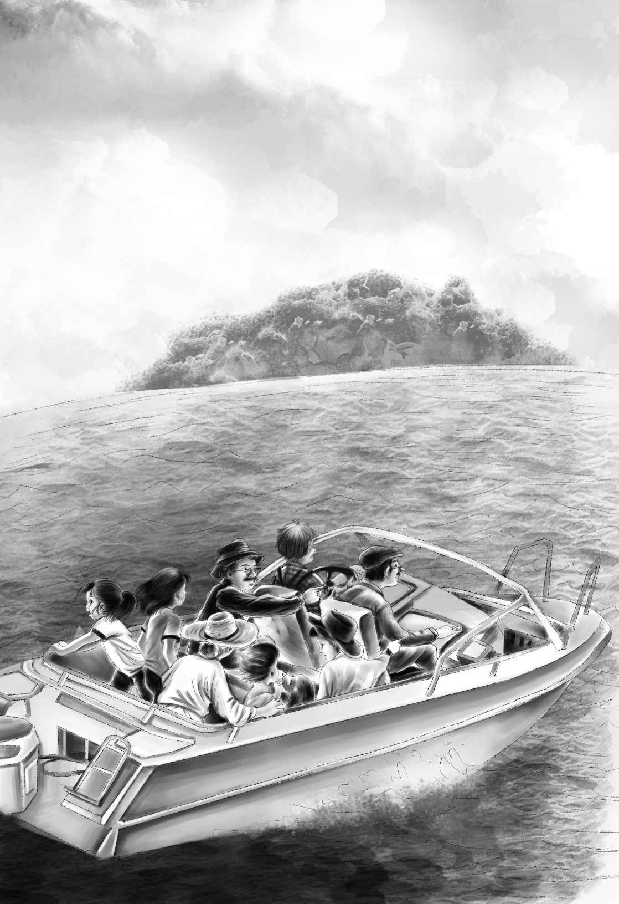

The First Surprise
“快告诉我们吧，爷爷，”亨利叫道，“我们可是一路从学校跑回来的呢！”
“告诉我们吧！”班尼一下子扑到草地上，躺在小狗的旁边，“学校已经放假啦，有整整一个夏天呢！就连望望也想知道您准备给我们什么惊喜！”
“维莉和我也是！”杰西说道。
正在花园里看书的奥登先生一脸惊诧地望向四个孩子。
“我说过今天要告诉你们吗？”他反问道。
“爷爷在逗你玩儿呢，班尼。”杰西说。
“逗他？”奥登先生大声说，“我可是认真的！”
但他确实是在和他们开玩笑，并乐在其中。早在春天的时候，他就答应一到夏天就给孩子们一个惊喜。他其实一直盼着孩子们回来，已经等了足足一个多小时。
“现在已经放暑假啦！”维莉说。
“我们可是一路跑回来的呀！”班尼叫道。
“没错，那又如何？”奥登先生慢悠悠地问。
“您说过的，这个惊喜是您15岁时顶喜欢的。”亨利提醒道。
“没错，其实六岁起就喜欢了。”奥登先生望向班尼。
“而且，您还说过，等学校一放假就会宣布这个惊喜的，爷爷。”班尼期待地看着奥登先生。
奥登先生笑了起来。“我是说过，”他回答道，“我这不正打算告诉你们吗？”
四个孩子齐刷刷地注视着他。
爷爷娓娓道来：“从前，我父亲买了一座岛。”
“他买了一座岛？”亨利叫了起来。
“是的，”奥登先生接着说，“岛很小，岛上只有一座小房子和一个马厩，还有一间渔人小屋。我父亲当时只想找一个安静的地方，去训练他的骏马。现在，老船长丹尼尔住在那间渔人小屋里，负责开摩托艇。我打算带你们去岛上看看，要是你们喜欢，可以在那儿待上一个暑假。”
“太棒了！爷爷，”杰西说，“没有比这更好的安排了——就像回到了棚车岁月。”
“能不能让望望也一起去？”班尼摸了摸小狗的头，征询地问。
“当然可以，”奥登先生说，“你们走了，它该多孤单啊！”
“那我们可不可以准备一个炉子做饭？”维莉接着问道。
“你们想要吃饭，还真得自己做。”奥登先生回答，“我会给你们一些钱，买一些锅碗瓢盆什么的。不过你们事先得告诉我需要多少钱，可不准狮子大开口哦。”
孩子们都笑了起来，因为就连班尼都知道，爷爷有的是钱，不管他们想要什么，他都买得起。
“那咱们这就走吧。”班尼迫不及待地说。
四个孩子立刻跳了起来，奥登先生不禁仰头大笑。
“这里离大海远着呢，咱们得开车去！”他说，“之后丹尼尔船长会开摩托艇带我们去岛上。刚好摩尔医生今天放假，我们可以接上他和他母亲，一起过去玩。”
孩子们高兴极了，因为摩尔医生和他母亲是他们最好的朋友。
见到他们前来，摩尔医生显得一点儿也不意外。他扶着母亲上了车，然后一行人便朝着海边进发了。路上，杰西和维莉开始盘算起来，看看到底需要准备些什么。
“咱们得买一些面包和牛奶，”杰西说，“这样就算没有其他吃的，我们也饿不着。”
“给你们小本子和笔。”奥登先生从口袋里掏出了一个蓝色的小本子。
“快把咱们需要的餐具都记下来吧。”维莉说。
还没到达海边，杰西已经将她们所能想到的东西全都记下来了——有餐匙、茶杯、碗、盘子、一把锋利的刀子、一个洗碗盆，以及一个大茶壶。
随即，大海映入了大家的眼帘，奥登家族的摩托艇被拴在一个小码头上。而这位老渔民——丹尼尔船长，正在码头上等着大家。
“你还好吗，船长？”奥登先生一边和他握手，一边说道，“请你送我们去岛上吧，要是孩子们不喜欢，还得再麻烦你及时把我们送回来。”
一听这话，孩子们立刻嚷嚷起来：“我们肯定会非常喜欢的。”

大家登上摩托艇，出发了。
“那儿就是咱们的岛！”亨利叫道，“是咱们自己的岛！”
班尼开始朝着岛上挥手。
“那儿没人，班尼。你挥手干吗？”爷爷问道。尽管如此，孩子们还是一个个地朝着小岛挥起手来。
“快看，那是我们的小房子！”班尼大叫道，“可是够大吗？能容得下我们所有人吗？”
“呃，不是，”丹尼尔船长说，“那间小屋是我的家。”说完，他笑着看了看奥登先生。
船停靠在一个小码头，他们没走多远，便看到了一间黄色的小屋。
“这间黄色小屋就是给咱们住的吗？”杰西叫道。
“噢，不是！”奥登先生答道，“你们几个孩子得去马厩里住！”
“住马厩！”孩子们欢呼起来，朝着马厩奔了过去。
“这是我听过最好的主意啦！”亨利欢呼道。他打开了马厩大门，朝里面望去。孩子们谁也没有留意到地板是新铺的，大家的目光全都被屋子里的四个围栏吸引过去了。
“这就是我们的卧室！”班尼指着那些围栏，喊了起来。
“太酷了！”亨利说着打开一扇推拉门，朝里面看了看。房间里除了一扇大大的窗户，便没有其他东西了。
“咱们去抱一些稻草下来，铺在地上当床，”亨利看了看楼上，指着面前一叠干净整洁的浅棕色毯子说，“毯子就铺在稻草上。”
杰西却向一只小炉子飞奔过去，炉子是新崭崭的，顶上放着烤箱。亨利也跟着走了过去，停在几只木桶前看了看。
“这儿有两个空桶，”他叫道，“我们可以用它们来当桌脚，再在上面搭上这块长木板，就是一张现成的桌子。”
“太棒啦！”杰西说。
几个大人站在门口，看着兴奋不已的孩子们。
“真不错，那些工人还留下了几个旧箱子，”亨利说，“有了这些木料，我可以做出好多东西来——或许，可以做一个小橱柜来放餐具。”
“噢，亨利，你真的可以吗？”维莉说，“我们没有柜门也行。”
“他当然可以啦，”班尼说道，“他还可以把柜门也一块儿做好。亨利什么东西都会做！”
“那边有泉水，”奥登先生将孩子们领到窗户旁边，向外看去，“这里的泉水永远不会枯竭，不管天气多热，都会像冰块儿一样清凉可口，你们只管放心喝好了！”
“一切真是太完美啦，对吗，亨利？”杰西说，“最重要的东西全都有啦，噢，我真希望今晚我们就能住在这儿！”
“那餐具怎么办？”维莉问。
杰西说：“咱们可以去杂货店买些勺子之类的。爷爷，这岛上有现成的餐具吗？”
“真抱歉，孩子们。除了船长自己的以外，这儿没有餐具。”奥登先生回答道。
“没关系，爷爷！”杰西说，“反正还有好多东西要买呢。我们每样买六份吧，这样就能招待客人了。”
“咱们还有时间回岸上，”亨利看了看表，“我们可以到杂货店去买餐具，还可以买一些面包和牛奶回来作晚餐。”
“而且我也想我的小熊啦。”班尼说。
“很好，孩子们，”奥登先生笑容满面地说，“你们回去拿想要的东西，今晚就可以住在这儿了。”
但是这时，奥登先生注意到丹尼尔船长一副若有所思的样子。
“船长，你在想什么？”他问道。
“这……”丹尼尔船长说，“我刚刚听您提到，这岛上就我一个人住。”
“哦，难道不是吗？”奥登先生注视着他。
“对，不是。还有一位年轻的朋友跟我一起住在小屋里。我想我最好告诉你，他是一个不错的年轻人，很能干，就是身体不太好。”
“他是谁？他怎么了？”正如丹尼尔船长所料，奥登先生立刻严肃了起来。
“我对他知根知底。”丹尼尔船长说着便向摩尔医生使了使眼色，示意他帮忙说说话。
“我去小屋找那人聊聊怎么样？”摩尔医生解围道。
“好！”奥登先生说，“你去看看是怎么一回事儿。”
“我想跟您一块儿去。”班尼说。
“哦，不行，”医生说道，“你们到小黄屋那儿去吧！瞧瞧能从窗外看到些什么。我很快就回来。”
于是，孩子们跑过去沿着每扇窗户看了起来。摩尔医生则跟着丹尼尔船长去看他的朋友了。